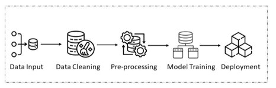
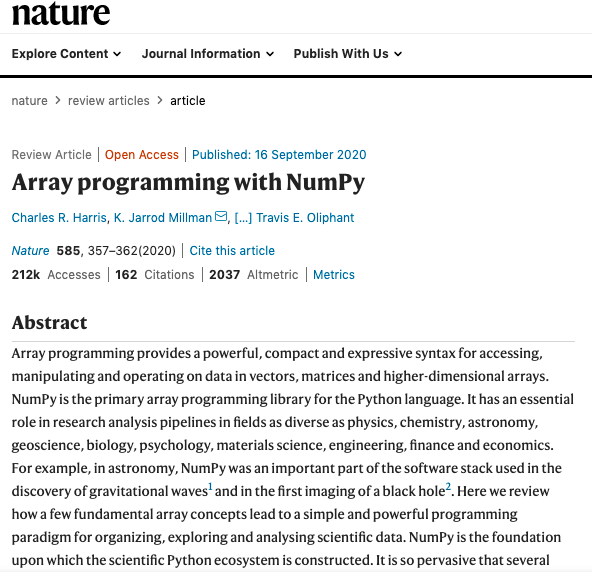
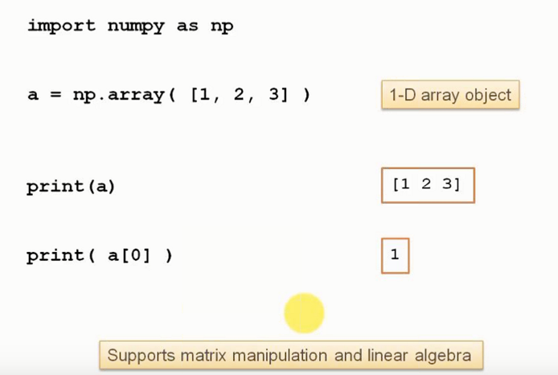
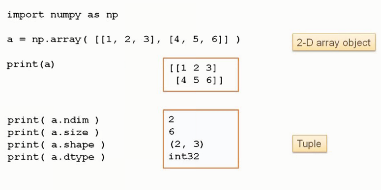
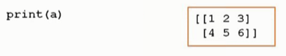
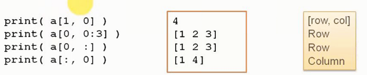
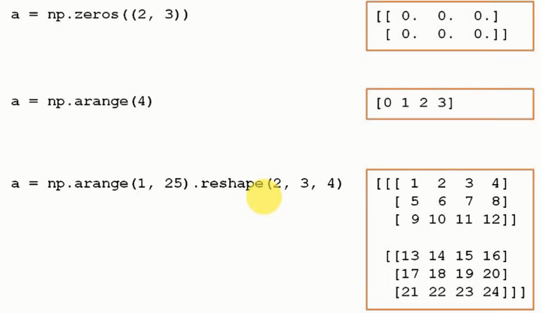
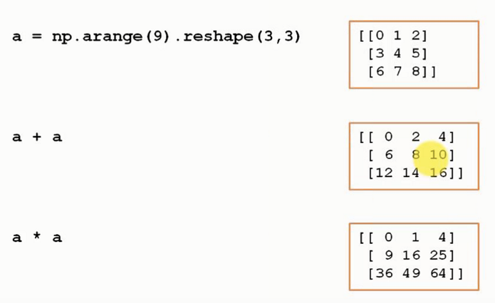
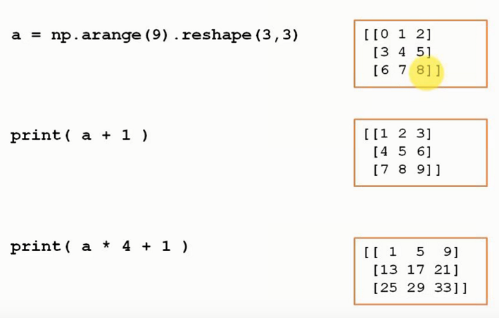
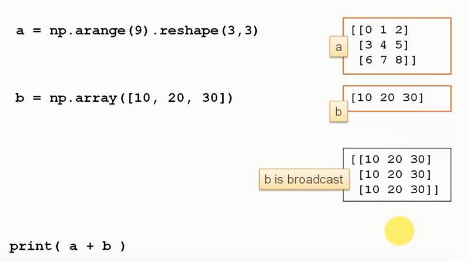

Big Picture: The ML Data Pipeline
This lecture is the beginning of the practical workflow behind a real machine learning project. The idea is not only to run code, but to build a reusable pipeline you can adapt again and again in future projects.

Load
Explore
Visualize
Prepare
Select
The lecture also stresses a useful professional habit: build templates and notebooks you understand well enough to reuse. Tools can help you code faster, but only if you understand what every important line is doing.
Introduction to NumPy
NumPy is a third-party Python library built for scientific computing. In machine learning, it matters because we constantly work with vectors, matrices, and large collections of numbers.
Plain Python lists
Flexible, but not ideal for fast numerical computing or matrix-style operations.
NumPy arrays
Designed for compact syntax, efficient numerical operations, and linear algebra workflows.

NumPy Arrays and Their Properties
A NumPy array can be one-dimensional, two-dimensional, or higher-dimensional. In ML practice, this means vectors, matrices, and more general tensor-like objects.


| Property | Meaning |
|---|---|
shape |
How many elements exist in each dimension |
size |
Total number of elements in the array |
dtype |
Data type of all elements |
One important difference from Python lists is that NumPy arrays are homogeneous: all elements must share the same data type. That restriction is exactly what helps NumPy become fast and consistent for scientific work.
Indexing and Slicing
NumPy arrays support direct access to rows, columns, and sub-regions using indexing and slicing syntax.


: symbol is used to select all elements along a chosen dimension.
[row, column].
This is one of the reasons NumPy becomes so useful in data science: working with subsets of large numerical structures is concise and readable.
Creating Arrays
NumPy provides many convenient ways to build arrays directly in code.

Create arrays already filled with default values.
Generate regular sequences of numbers automatically.
Turn a flat sequence into a matrix-like object with the desired dimensions.
These tools are especially practical when you want to prepare numerical inputs quickly without hardcoding every value by hand.
Array Operations
NumPy supports elementwise arithmetic, which makes mathematical expressions look close to the way we naturally write them.


Broadcasting
Broadcasting is one of NumPy’s most useful ideas: it allows arrays with different shapes to still interact in arithmetic operations when they are compatible in a smart way.

A common example is adding a 1D vector to a 2D matrix. NumPy behaves as if the vector were copied across rows or columns so that shapes align. This makes many matrix-style operations compact and expressive.
Notebook 1 — Load Dataset
The first notebook is about getting data into the environment correctly.
Real data rarely arrives in a perfectly convenient form. Files may contain headers, metadata, comments, different delimiters, or inconsistent formatting. So the first practical skill is simply learning how to load tabular data safely and inspect what actually got imported.
Load raw tabular data into Python lists.
Import numerical data directly into arrays using tools such as loadtxt.
Read the dataset as a DataFrame, which is usually best for exploration.
Notebook 2 — Explore Dataset
The second notebook is about numerical exploratory data analysis: understanding the dataset before doing any machine learning.
Questions to ask
- How many rows and columns are there?
- What are the data types?
- Are there missing values?
- Are features on very different scales?
- Is the class distribution balanced?
Typical tools
.shape.dtypes.describe()groupby(...).size()- correlation and skewness checks
Notebook 3 — Data Visualization
The third notebook continues EDA, but visually instead of only numerically.
Good for seeing the exact bin-based distribution of a single variable.
Good for understanding the smoothed overall trend of the distribution.
Good for spotting quartiles, skewness, and possible outliers quickly.
This notebook reinforces a strong practical idea: numbers and plots complement each other. Some patterns are easier to notice numerically, while others become obvious only once they are visualized.
Notebook 4 — Data Preparation
The fourth notebook begins the transformation stage: making the data more suitable for machine learning algorithms.
| Technique | Main Goal |
|---|---|
| Rescaling | Compress values into a specific range, often between 0 and 1 |
| Standardization | Center data around mean 0 with standard deviation 1 |
| Normalization | Scale observations according to a norm, such as L1 or L2 |
| Binarization | Turn numeric values into 0/1 values using a threshold |
Notebook 5 — Feature Selection
The fifth notebook focuses on keeping the most useful attributes and reducing the noise or redundancy that may hurt modeling.
Ranks features using statistical relationships with the target.
Recursively removes weaker features until only the desired subset remains.
Uses model-based scores to estimate which features contribute most.
The purpose of feature selection is not only to simplify the model. It can also reduce overfitting, improve interpretability, and make training more efficient.
Study Material
Use the slide deck for the NumPy overview, array examples, and the five notebook stages of the practical data-preparation workflow.
View PDF →Use the transcript for the lecturer’s practical advice on templates, documentation, data cleaning mindset, and why exploratory data analysis should never be rushed.
View PDF →Repository with course notebooks, datasets, and hands-on material used throughout the lecture.
Because this is a hands-on lecture, the best study strategy is to keep the notebook material, the repository, and the lecture page open together.
Quick Review Quiz
1. Why is NumPy important in machine learning?
Because it provides efficient multidimensional arrays and supports matrix-style numerical operations used constantly in machine learning.
2. What is one key difference between a NumPy array and a Python list?
A NumPy array is homogeneous, meaning all elements share the same data type, while Python lists can mix different types.
3. What does the shape of an array describe?
It describes how many elements the array has along each dimension.
4. What is slicing used for in NumPy?
Slicing is used to select subparts of an array, such as ranges of rows or columns.
5. What does broadcasting allow NumPy to do?
It allows arrays with compatible but different shapes to interact in arithmetic operations without manual repetition.
6. Why is Pandas often preferred for dataset exploration?
Because DataFrames make tabular data easier to inspect, label, summarize, and manipulate interactively.
7. What is the purpose of exploratory data analysis before modeling?
To understand the dataset, detect missing values, inspect scales and distributions, and identify problems before applying machine learning.
8. What is the difference between a histogram and a density plot?
A histogram shows bin counts explicitly, while a density plot shows a smoothed version of the distribution trend.
9. Why might data preparation include scaling or standardization?
Because features on very different numerical scales can make training less stable or less effective for some algorithms.
10. What is the goal of feature selection?
To keep the most useful features, reduce redundancy, improve interpretability, and often reduce overfitting or training cost.